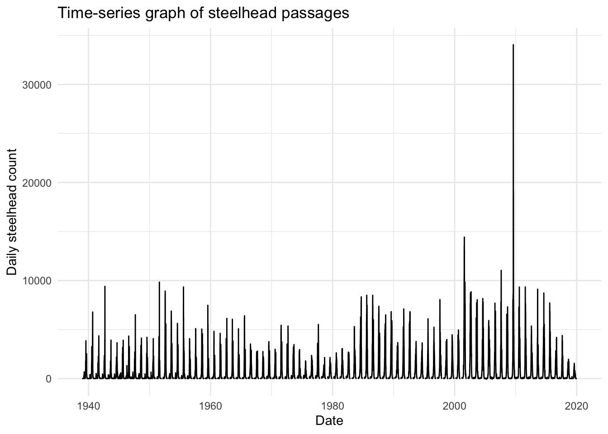
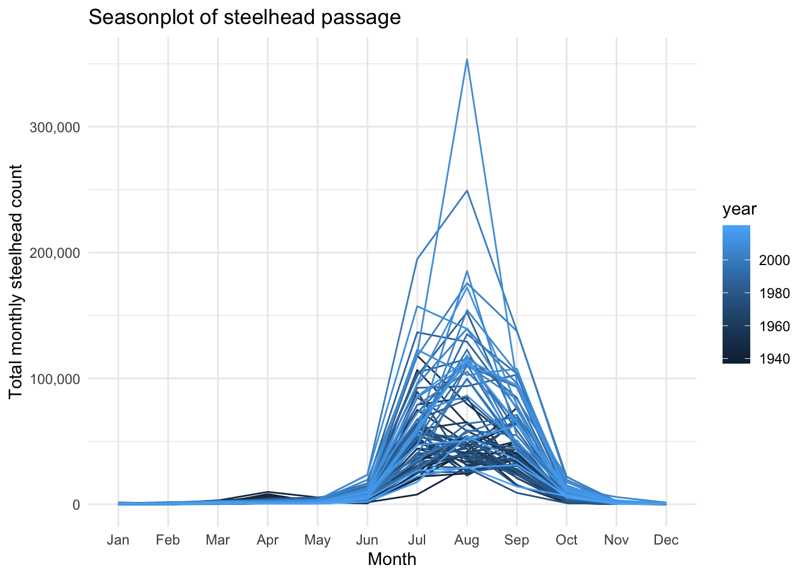
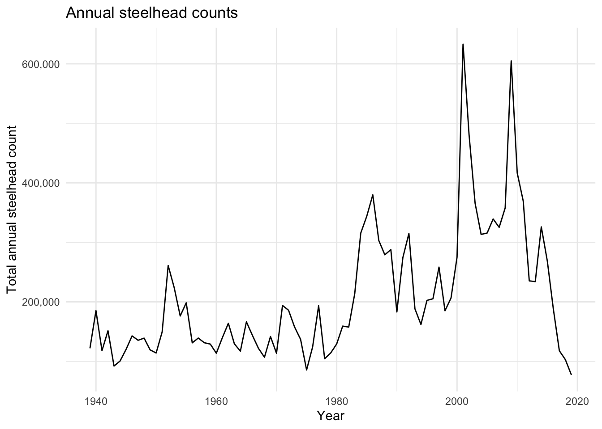

Figure 1. Steelhead migrating upstream
Image Credit: Christopher Lane, accessed from Columbia River Inter-Tribal Fish Commission
Steelhead are found in the Columbia River on the border of Oregon and Washington. Steelhead are a salmonid species of fish that are born in freshwater rivers, migrate to the ocean and return to freshwater to spawn. The graphs below show the daily counts of steelhead passages at the Bonneville Dam from 1938 to 2019.
Data from: Columbia River DART, Columbia Basin Research, University of Washington. (2019). Adult Passage Graphics & Text. Available from http://www.cbr.washington.edu/dart/query/adult_graph_text
Figure 1. Steelhead migrating upstream
Image Credit: Christopher Lane, accessed from Columbia River Inter-Tribal Fish Commission
The time-series plot below displays the seasonality in steelhead salmon passages from 1938-2019. As can be interpreted from the graph, steelhead return to Bonneville Dam yearly as part of their annual migration.
# clean up data: get rid of unnecessary columns
fish_clean <- fish_data %>%
clean_names() %>%
select(c("year", "mm_dd", "value")) %>%
rename(fish_per_day = value)
# Parse dates with lubridate
fish_date <- fish_clean %>%
mutate(ydm = paste(year, mm_dd)) %>%
mutate(ydm_date = lubridate::parse_date_time(ydm, "ydm")) %>%
drop_na(ydm_date)
# Make time-series graph
ggplot(data = fish_date, aes(x = ydm_date, y = fish_per_day)) +
geom_line() +
theme_minimal() +
labs(title = "Time-series graph of steelhead passages",
x = "Date",
y = "Daily steelhead count")
Figure 2. Steelhead counts reported daily from 1938-2020 at Bonneville Dam, OR.
The seasonplot below displays the total steelhead passages by month for years 1938-2019. As shown, steelhead counts peak from July to September as the fish migrate through Bonneville Dam.
# Parse year and month separately to wrangle data for seasonplot
fish_seasons <-fish_date %>%
mutate(month = month(ydm_date, label = TRUE)) %>%
drop_na() %>%
group_by(year, month) %>%
summarize(total_fish = sum(fish_per_day))
# Make a seasonplot
ggplot(data = fish_seasons, aes(x = month, y = total_fish, group = year)) +
geom_line(aes(color = year)) +
theme_minimal() +
labs(title = "Seasonplot of steelhead passage",
x = "Month",
y = "Total monthly steelhead count") +
scale_y_continuous(labels = scales::comma)
Figure 3. Seasonplot of total monthly steelhead passages at Bonneville Dam, OR. Each line represents one year from 1938-2019 with lighter shades of blue representing later years and darker blue representing earlier years.
The line graph below shows the total annual steelhead counts from 1938-2019. This graph shows that steelhead salmon increased in abundance overall between 1980 and 2010, but their populations have dropped markedly in the past decade.
# Make summary table with annual counts for steelhead data
fish_annual <- fish_date %>%
drop_na() %>%
group_by(year) %>%
summarize(total_fish = sum(fish_per_day))
ggplot(data = fish_annual, aes(x = year, y = total_fish)) +
geom_line() +
theme_minimal() +
labs(title = "Annual steelhead counts",
x = "Year",
y = "Total annual steelhead count") +
scale_y_continuous(labels = scales::comma)
Figure 4. Line graph of total annual steelhead counts from 1938-2019 at Bonneville Dam.